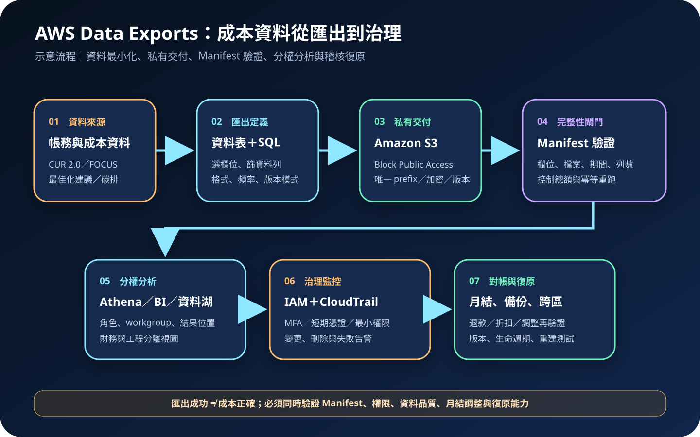

AWS Data Exports 與 CUR 2.0：成本資料匯出與治理
AWS Data Exports 將帳務、成本最佳化與碳排資料依排程交付至 Amazon S3。CUR 2.0 是取得細粒度成本與用量資料的建議方式，可用基本 SQL 選擇欄位、篩選資料列並固定輸出結構，供 Athena、Redshift、QuickSight 或外部分析流程使用。
作者：Dr. William｜查閱與發布：2026-11-15
服務定位
AWS Data Exports 提供標準資料匯出、Cost and Usage Dashboard 與舊版 CUR 匯出。標準匯出可選 CUR 2.0、FOCUS 格式、Cost Optimization Hub 建議與碳排等資料表，再把查詢結果以 Parquet 或壓縮 CSV 交付至指定 S3 bucket。
Cost Explorer 適合互動式成本探索；Budgets 適合門檻與通知；Cost Anomaly Detection 適合辨識偏離歷史模式的支出；Data Exports 則適合把可重複處理的明細資料交給資料湖、BI、分攤、對帳與稽核流程。這些能力互補，不能彼此直接取代。
核心概念與服務邊界
匯出定義
- 資料表：決定 CUR 2.0、FOCUS、成本最佳化建議或碳排等資料來源。
- SQL 查詢：以欄位選擇、資料列篩選與欄位別名控制輸出內容與結構。
- 交付設定：定義 S3 bucket、prefix、檔案格式、壓縮與版本模式。
- 排程：帳務與成本資料依官方支援頻率更新，不提供秒級串流。
- 標籤：可用資源標籤配合 ABAC 限制匯出管理權限。
交付與取用
- 資料分割：CUR 2.0 依帳務期間建立資料目錄。
- Manifest：列出欄位、資料檔、涵蓋期間與額外整合檔，應作為攝取依據。
- 覆寫模式：節省 S3 容量，但下游必須能處理當期資料修正。
- 建立新版本：保留每次刷新，便於比較但增加儲存與查詢成本。
- 分析端：Athena、Redshift、QuickSight 或第三方工具另有 IAM、網路與成本邊界。
依 2026-11-15 查閱的官方文件，CUR 2.0 每個資料表最多可建立 5 個匯出；FOCUS、成本最佳化建議、Cost and Usage Dashboard 與碳排等類型有各自配額。配額、支援資料表與區域範圍可能調整，正式設計前應重新查閱官方文件。
適合與不適合的使用情境
適合
- 建立跨帳號、跨服務的細粒度成本與用量資料湖。
- 依部門、產品、環境、成本類別或標籤進行 showback／chargeback。
- 把固定欄位與資料列交付給財務、FinOps、平台與產品團隊。
- 以 Parquet 配合 Athena 建立可重複執行的成本分析。
- 將 FOCUS 格式與其他雲端或軟體供應商資料標準化比較。
- 保留 Manifest、查詢定義與月結版本，支援對帳與稽核證據。
不適合或不能單獨完成
- 要求秒級阻止超支、資源建立或可疑 API 行為。
- 把匯出資料當成發票、付款憑證或永不修正的最終帳務紀錄。
- 未定義資料擁有者與敏感欄位，直接把全量 CUR 分享給所有團隊。
- 只依檔名猜測最新資料，而不讀取 Manifest 與執行狀態。
- 把 S3 物件公開或透過長期 Access Key 提供分析工具存取。
- 要求 Data Exports 自動完成成本歸因品質、標籤補正或業務合理性判斷。
示意故事案例：多帳號產品成本分攤
以下為示意案例，不代表特定企業或正式部署。 一家 SaaS 公司使用 AWS Organizations 管理正式、測試與共用服務帳號。FinOps 團隊需要每日產出產品成本，但財務只需要彙總欄位，產品團隊則需要服務、區域、使用類型與成本分攤標籤。
平台團隊建立兩個 CUR 2.0 匯出：受限的財務匯出移除不必要的帳號與資源細節；工程匯出保留診斷所需欄位。兩者使用不同 S3 prefix、讀取角色與 Athena workgroup，bucket 保持私有並啟用版本、生命週期、存取記錄與組織層級 CloudTrail。攝取工作先讀取 Manifest，再載入其列出的 Parquet 檔案。
月中發生折扣與退款調整時，當期分割區被刷新。資料流程依 Manifest 重新處理該帳務期間，先比對列數、成本總額與欄位結構，再更新儀表板。團隊因此能區分「AWS 帳務修正」與「資料管線失敗」，也避免把尚未月結的數值當成最終財務數字。

建置與運作流程
- 定義成本分析目的、資料擁有者、使用者、保存期間與敏感欄位。
- 確認 Organizations、付款帳號、連結帳號、Billing View、成本類別與標籤品質。
- 選擇 CUR 2.0、FOCUS、成本最佳化建議、碳排或 Dashboard 等資料表。
- 以最少欄位與必要資料列設計查詢，避免無差別匯出全量資料。
- 建立專用私有 S3 bucket 或隔離 prefix，啟用 Block Public Access 與 Object Ownership。
- 套用僅允許 Data Exports 寫入的 bucket policy，限制 SourceArn 與 SourceAccount。
- 選擇 Parquet 或 CSV、覆寫或建立新版本，並記錄下游相容性。
- 使用 IAM Identity Center／聯合身分、MFA 與短期憑證管理匯出。
- 分離 Create／Update／DeleteExport、讀取 S3、查詢 Athena 與 BI 發布權限。
- 建立匯出後等待首次交付，確認狀態、Manifest、分割區與資料檔一致。
- 下游程式讀取 Manifest 列出的檔案，不依固定檔名或目錄掃描推測內容。
- 驗證欄位結構、帳務期間、列數、總成本、幣別與已知控制總額。
- 透過 Athena workgroup、Redshift 或 QuickSight 提供受控分析，限制查詢結果位置。
- 啟用 CloudTrail、S3 存取監控、CloudWatch 告警與匯出失敗通知。
- 設定 S3 版本、生命週期、備份或跨區複寫，並測試重建資料管線。
- 月結後重新對帳，保存查詢定義、Manifest、結果摘要與核准紀錄。
成本、可用性與維運考量
成本重點通常位於相依服務：S3 儲存與請求、跨區複寫、KMS、Athena 掃描、Redshift、QuickSight、CloudTrail、CloudWatch 與資料傳輸。Parquet、欄列篩選、分割區與 Athena workgroup 掃描上限可降低分析成本；建立新版本能保留歷史刷新，但會增加物件數量與保存費用。
首次交付可能需要最多 24 小時，帳務與成本管理匯出至少每日刷新一次。Data Exports 的「Healthy」代表最近一次交付成功，不代表下游查詢、標籤品質、財務口徑或月結數字已正確。應分別監控匯出執行、S3 物件、Manifest、攝取工作與儀表板更新時間。
覆寫模式節省容量，但當期資料可能更新；建立新版本便於追蹤每次刷新，但下游必須避免重複計算。跨帳號 bucket、分析帳號與災難復原區域應明確定義擁有者、KMS 金鑰、bucket policy、複寫權限與回復順序。
AWS Data Exports 特有資安風險與控制
- 成本資料揭露組織結構：帳號、資源、產品、區域、標籤與折扣可能暴露商業資訊；以 SQL 縮小欄列並分離受眾。
- 匯出管理權限過大：將建立、更新、刪除、查詢與讀取權限依 IAM 最小權限分離，使用 ABAC 與 SCP 限制範圍。
- 長期憑證：人員使用 IAM Identity Center／聯合身分、MFA 與短期憑證；工作負載使用角色，不使用長期 Access Key。
- S3 公開存取：啟用 Block Public Access、停用 ACL、限制 bucket policy、VPC endpoint policy 與跨帳號主體。
- 混淆代理人風險：Data Exports 寫入政策同時限制
aws:SourceArn與aws:SourceAccount。 - 跨帳號 prefix 衝突：每個來源帳號使用唯一 prefix 與匯出名稱，防止同名交付互相覆寫。
- 靜態資料保護不足：預設交付使用 SSE-S3；若治理要求 KMS，應設計交付後的 SSE-KMS 轉換、複寫或處理流程並限制金鑰政策。
- 分析結果外洩：Athena 查詢結果、QuickSight dataset、Redshift unload 與下載檔案套用同等或更嚴格的分類、加密與存取控制。
- 機密混入查詢或自動化：credential、Access Key、Secret Key、Token、密碼與 cookie 不得寫入查詢、標籤、物件 metadata、日誌或程式碼；整合機密存於 Secrets Manager／Parameter Store。
- Manifest 被忽略：攝取程式驗證 Manifest 的欄位、檔案清單、時間範圍與到達順序，避免讀取不完整刷新。
- 帳務修正造成重複或遺漏：以帳務期間做冪等重跑，保存執行 ID、控制總額與對帳差異。
- 稽核不足：以 CloudTrail 監控 Data Exports、IAM、S3、KMS 與分析服務管理活動，透過 CloudWatch／EventBridge 告警未核准變更。
- 刪除或勒索風險：限制 DeleteExport、S3 DeleteObject 與 KMS 管理權限，使用版本、Object Lock（適用時）、備份與跨區復原。
- 資料保留失控：依法規與財務需求設定生命週期、刪除核准、法律保留與可驗證清除程序。
共同責任邊界
AWS 負責 Data Exports 受管服務、AWS 提供的資料表、查詢與排程能力、匯出執行及雲端底層基礎設施安全。AWS 依設定把結果交付至指定 S3 bucket，並提供 Manifest、狀態與 IAM 整合；服務不替客戶定義成本口徑、資料分類或業務分攤規則。
客戶負責選擇資料表與欄列、管理 Billing View、S3、IAM、MFA／短期憑證、網路隔離、公開存取、KMS、Secrets Manager／Parameter Store、CloudTrail／CloudWatch、分析工具與下游分享；同時負責標籤品質、對帳、資料保存、備份、跨區復原、月結判定與最終成本責任。
上線與維運可執行檢查清單
- □ 匯出目的、資料擁有者、使用者、保存期限與財務口徑已核准。
- □ 已選擇正確資料表，CUR 2.0／FOCUS／其他匯出用途清楚。
- □ SQL 只選擇必要欄位與資料列，敏感帳號及折扣資料已分流。
- □ 成本類別、標籤、帳號名稱與 Billing View 已通過品質檢查。
- □ S3 bucket 保持私有，Block Public Access 已啟用，ACL 已停用。
- □ bucket policy 僅允許必要服務與主體，SourceArn／SourceAccount 已限制。
- □ 跨帳號交付使用唯一 prefix，bucket owner 與責任人已確認。
- □ 人員使用聯合身分、MFA 與短期憑證，root 不用於日常管理。
- □ Create／Update／DeleteExport、S3 讀取與分析發布權限已分離。
- □ 覆寫或建立新版本的選擇已記錄，並符合稽核與儲存成本需求。
- □ Manifest 是唯一攝取清單，欄位、檔案、期間與完整性均會驗證。
- □ 攝取流程可冪等重跑當期帳務期間，不會重複計算或遺漏修正。
- □ S3、Athena、Redshift、QuickSight、KMS 與資料傳輸成本已有預算。
- □ Athena workgroup、查詢結果 bucket 與 BI dataset 已限制存取。
- □ 預設 SSE-S3 或交付後 SSE-KMS 流程符合資料分類與金鑰治理。
- □ credential、Access Key、Secret Key、Token、密碼與 cookie 未出現在設定、查詢或日誌。
- □ 整合機密存於 Secrets Manager／Parameter Store，並已設定輪替。
- □ CloudTrail 已記錄管理事件，CloudWatch／EventBridge 可告警未核准變更與交付失敗。
- □ S3 版本、生命週期、備份、跨區複寫或重建程序已測試。
- □ 月結、退款、折扣與調整後會重新對帳並保存差異與核准紀錄。
- □ 匯出配額、資料延遲、區域支援與官方文件會定期重新覆核。
AWS 官方一手來源
- AWS Data Exports 產品頁（查閱：2026-11-15）
- AWS Data Exports FAQs（查閱：2026-11-15）
- What is AWS Data Exports?（查閱：2026-11-15）
- Creating data exports（查閱：2026-11-15）
- Creating a standard export（查閱：2026-11-15）
- Understanding export delivery（查閱：2026-11-15）
- Setting up an Amazon S3 bucket for data exports（查閱：2026-11-15）
- Data protection in Data Exports（查閱：2026-11-15）
- Identity and access management for Data Exports（查閱：2026-11-15）
- Viewing and managing data exports（查閱：2026-11-15）
- Data Exports quotas and restrictions（查閱：2026-11-15）
- Understanding CloudTrail events（查閱：2026-11-15）
- AWS Shared Responsibility Model（查閱：2026-11-15）
內容說明
本文依查閱日可用的 AWS 官方文件整理，作為基礎學習與架構討論材料；實際作業仍須依最新資料表、欄位、配額、區域支援、交付頻率、定價、Organizations／Billing View、S3、IAM、KMS、CloudTrail／CloudWatch 及組織財務與資料治理程序調整。